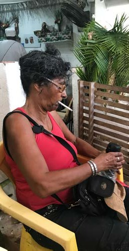
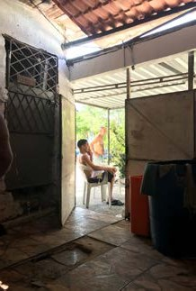
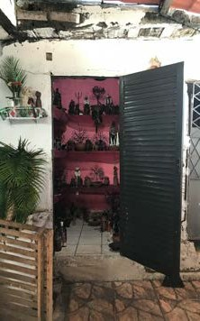
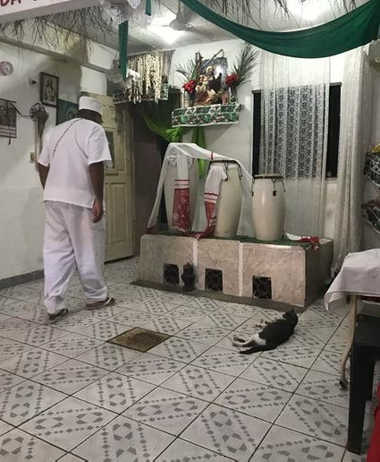
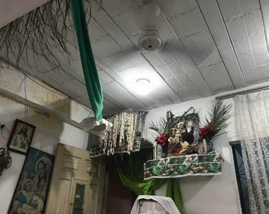
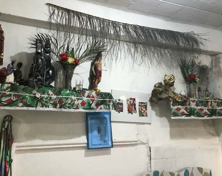
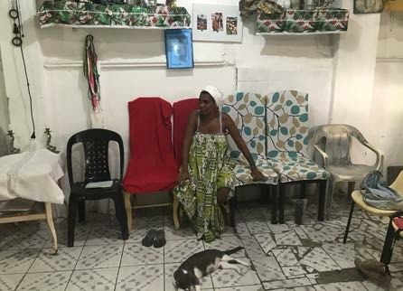
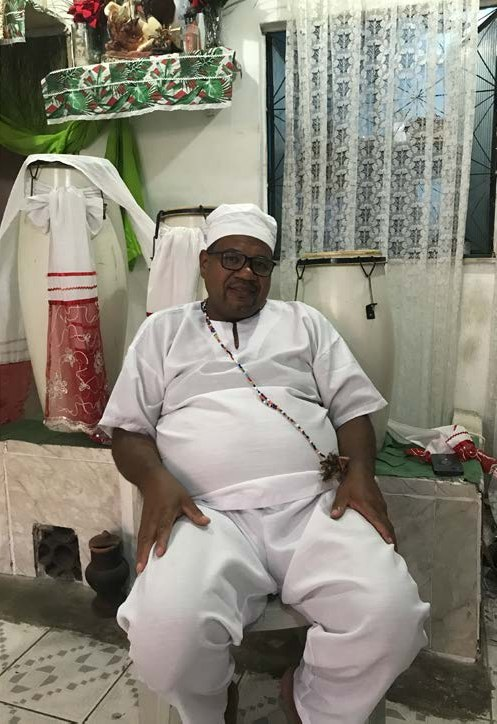
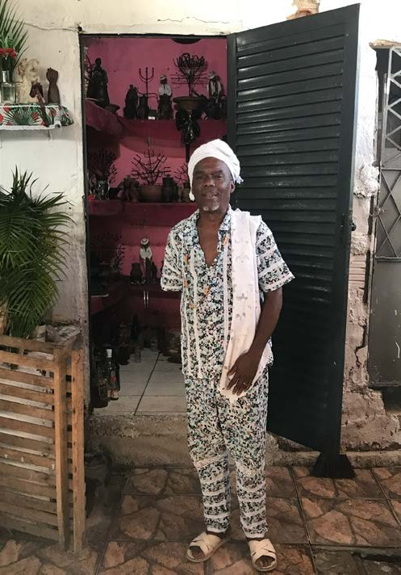
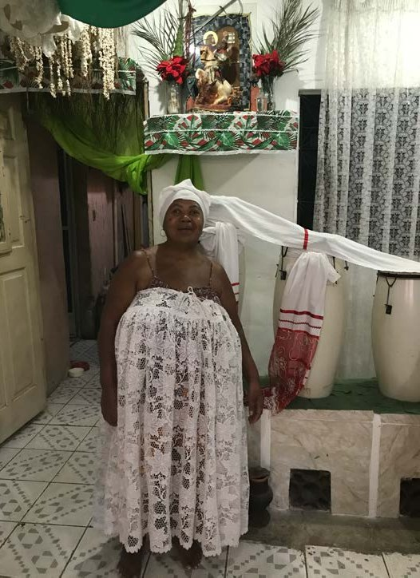

The loss of ancestral knowledge in sustainable practices
For centuries, indigenous communities have developed intricate, sustainable practices that harmonize with their natural environments. These traditions, such as sacred forest preservation, controlled cultural burning, and synchronized planting and harvesting, demonstrate a deep ecological wisdom. However, globalization, modernization, and shifts in cultural identity have led to the erosion of this knowledge, threatening both biodiversity and sustainable resource management.
My master thesis explores which factors influence the abandonment and loss of indigenous ancestral knowledge regarding sustainable practices. As modern development reshapes indigenous ways of life, social structures and spiritual connections to nature are disrupted, leading to the commodification of ecosystems. The United Nations estimates that 90% of indigenous languages, carriers of this wisdom, will disappear within a century, accelerating the loss of environmental stewardship traditions.
A key insight from my work is that these communities do not perceive themselves as separate from nature but as part of a reciprocal relationship with it. Even after centuries of displacement and external pressures, many indigenous groups maintain aspects of their ecological cosmology, proving that this wisdom is resilient yet fragile.
My position and personal connection
My approach to this research is deeply shaped by my lived experience between cultures. Growing up between Fiji, Brazil, and Germany, I witnessed how external interventions, often framed as “solutions” by NGOs, governments, or development actors, frequently created new cultural and environmental problems instead of addressing root causes.
This personal history informed my positioning not as a representative, but as a reflective observer and bridge-builder. I see system design as a way to engage with complexity responsibly: to question dominant paradigms, surface hidden assumptions, and create space for dialogue rather than imposed solutions.
Which factors contribute to the abandonment of indigenous ancestral knowledge related to sustainable practices?
Rather than treating sustainability as a purely technical challenge, the research reframes it as a systemic and cultural issue, shaped by worldviews, power structures, and mental models. Key areas of investigation included:
- Indigenous and Afro-diasporic cosmovisions (holistic worldviews)
- The impact of colonialism, globalization, and “development” narratives
- How linear thinking disrupts circular systems of knowledge
- Why many sustainability initiatives fail due to lack of contextual understanding

Methodology and system design tools
The research combined theoretical inquiry, fieldwork, and systems mapping, using tools learned throughout the System Design master’s program. Methods included:
- Literature research across anthropology, decolonial theory, ecofeminism, and systems theory
- Qualitative and quantitative interviews and surveys with Indigenous Fijians
- Cultural analysis of Afro-Brazilian and Indigenous knowledge systems
- System mapping to identify relationships, feedback loops, and delays
- Reflexive positioning to address power dynamics and ethical research practice
Rather than extracting knowledge, the process emphasized listening, contextual sensitivity, and long-term thinking.


Fieldwork in Rio de Janeiro
In the northern suburbs of Rio, I interviewed Iara Franco, who is of Afro-Indigenous descent. She doesn’t call her way of life sustainable, but she lives it: she gathers herbs only at certain times, out of respect for the Orixás.




She took me to an Umbanda house in Madureira, where I was welcomed with a shared meal. The leader saw commodification, not prejudice, as the biggest threat to passing on their traditions.



I set aside my planned activity and chose to listen instead. Here, circular thinking lives in how people support each other and share what they have.



Key insights
- Sustainable practices are inseparable from cultural worldviews and cannot be isolated as technical fixes.
- Many failures in sustainability and NGO-led interventions stem from linear thinking applied to non-linear systems.
- Indigenous knowledge systems are not static or “lost”: they are adaptive, living, and in transformation.
- Circular concepts of time, reciprocity, and interconnectedness offer powerful alternatives to extractive models of progress.
System design provides tools to navigate complexity without erasing difference.